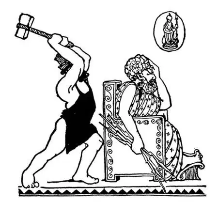

10
Fairy-Tale Gods
神话故事中的众神

THERE was once a man named Hellen—strange-sounding name for a man, isn't it? He had a great many children and children's children, and they called themselves Hellenes. They lived in a little scrap of a country that juts into the Mediterranean Sea, and they called their land Hellas.I once upset a bottle of ink on my desk, and the ink ran out into a wriggly spot that looked exactly as Hellas does on the map. Though Hellas is hardly any bigger than one of our states, its history is more famous than that of any other country of its size in the world. We call Hellas Greece and the people who lived there Greeks .
About the same time, the Jews were leaving Egypt, about the time when people were beginning to use iron instead of bronze, that is, about 1300 B.C., we first begin to hear of Hellas and the Hellenes, of Greece and the Greeks.
The Greeks believed in many gods, not in one God, as we do and as the Jews do, and their gods were more like people in fairy tales than like divine beings. Many beautiful statues have been made of their different gods, and poems and stories have been written about them.
There were twelve—just a dozen—chief gods. Six of these were female gods, known as goddesses. They were supposed to live on Mount Olympus, which was the highest mountain in Greece. These gods were not always good, but often quarreled and cheated and did even worse things. The gods lived on a kind of food that was much more delicious than what we eat. It was called nectar and ambrosia, and the Greeks thought it made those who ate it immortal; that is, so that they would never die.
Let me introduce you to the family of the gods. I know you will be pleased to meet them. Most of them are known by two names; the first name is Greek, the second is Roman.
Zeus or Jupiter is the father of the gods and the king who rules over all human beings. He sits on a throne and holds a zigzag flash of lightning called a thunderbolt in his hand. An eagle, the king of birds, is usually by his side.
Hera or Juno is his wife and the queen of the gods. She carries a scepter, and her pet bird, the peacock, is often with her.
Poseidon or Neptune is one of the brothers of Zeus. He rules over the sea. He rides in a chariot drawn by sea-horses and carries in his hand a trident, which looks like a pitchfork with three points. He can make a storm at sea or quiet the waves simply by striking them with his trident.
Hephaestus or Vulcan is the god of fire. He is a lame blacksmith and works at a forge. His forge is said to be in the cave of a mountain, and as smoke and fire come forth from some mountains they are called volcanoes after the god Vulcan inside.
Apollo is the most beautiful of all the gods; his name is the same to both Greeks and Romans. Apollo is the god of the sun and of song and music. Every morning— so the Greeks said—he drives his sun-chariot across the sky from the east to the west, and this makes the sunlighted day.
Artemis or Diana is the twin sister of Apollo. She is the goddess of the moon and of hunting.
Ares or Mars is the terrible god of war, who is only happy when a war is going on—so that he is happy most of the time.
Hermes or Mercury is the messenger of the gods. He has wings on his cap and on his sandals, and he carries in his hand a wonderful winged stick or wand, which, if placed between two people who are quarreling, will immediately make them friends. One day Hermes saw two snakes fighting and he put his wand between them, whereupon they twined around it as if in a loving hug, and ever since the snakes have remained entwined around it. This wand is called a caduceus .

Birth of Minerva or Athena [密涅瓦（雅典娜）的出生]
Athena or Minerva is the goddess of wisdom. She was born in a very strange way. One day Zeus had a terrible headache—what we call a splitting headache. It got worse and worse, until at last he could stand it no longer, but he took a very strange way to cure it. He called Hephaestus, the lame blacksmith, and told him to hit him on the head with his hammer. Though Hephaestus must have thought this a funny request, of course he had to obey the father god. So he struck Zeus a terrible blow on the head, whereupon there sprang forth Athena in all her armor, and the headache, of which she had been the cause, had gone. So she was born from his brain; that is why Athena is the goddess of wisdom. She founded a great city in Greece and named it Athens, after herself. She is supposed to look out for this city as a mother does for her child.
Aphrodite or Venus is the goddess of love and beauty. She is the most beautiful of the goddesses, as Apollo is the most beautiful of the gods. She is said to have been born from the sea foam. Eros or Cupid, her son, is a chubby boy with a quiver of arrows on his back. He goes about shooting his invisible arrows into the hearts of human beings, but instead of dying when they are hit, they at once fall in love with someone. That is why we put hearts with arrows through them on valentines.
Hestia or Vesta is the goddess of the home and fireside, who looks out for the family.
Demeter
or Ceres
is the goddess of the farmer.
These are the twelve gods and goddesses of the Olympian family.
Hades
or Pluto
is a brother of Zeus. He rules the world underground and lives down there.
There are many other less important gods and goddesses as well as some gods that are half human, such as the three Fates, the three Graces, and the nine Muses.
Some of the planets in the sky that look like stars are still called by the names of these gods. Jupiter is the name of the largest planet. Mars is the name of one that is reddish—the color of blood. Venus is the name of one that is very beautiful. There is also a Mercury, a Neptune, and a Pluto.
The Greeks' prayers to their gods were not like ours. Instead of kneeling and closing their eyes as we do, they stood up and stretched their arms straight out before them. They did not pray to be forgiven for their sins and to be made better. They prayed for victory over their enemies or to be protected from harm.
When they prayed, they often made the gods an offering of animals, fruit, honey, or wine in order to please them so that the gods or goddesses would grant their prayer. The wine they poured out on the ground, thinking the gods would like to have them do this. The animals they killed and then burned by building a fire under them on an altar. This was called a sacrifice . Their idea seemed to be that even though the gods could not eat the meat of the animals nor drink the wine themselves, they liked to have something given up for them. Even today we say a person makes a sacrifice when he gives up something for another person.
When the Greeks were sacrificing, they usually looked for some sign to tell whether the gods were pleased with the sacrifice and whether they would answer the prayer and do what was asked. A flock of birds flying overhead, a flash of lightning, or any unusual happening they thought was a sign which meant something. Such signs were called omens . Some omens were good and showed that the god would do what he was asked, and some omens were very much like some of the signs that people believe in even today when they say it is a good sign or good luck if you see the new moon over the right shoulder, or a bad sign or bad luck if you spill the salt.
Not so very far from Athens is a mountain called Mount Parnassus. On the side of Mount Parnassus was a town called Delphi. In the town of Delphi there was a crack in the ground, from which gas came forth, somewhat as it does from cracks in a volcano. This gas was supposed to be the breath of the god Apollo, and there was a woman priest called a priestess, who sat on a three-legged stool or tripod over the crack so as to breathe the gas. She would become delirious, as some people do when they are sick with fever and we say they are out of their heads , and when people asked her questions she would mutter strange things and a priest would tell what she meant. This place was called the Delphic Oracle, and people would go long distances to ask the oracle questions, for they thought Apollo was answering them.
The Greeks went to the oracle whenever they wanted to know what to do or what was going to happen, and they firmly believed in what the oracle told them. Usually, however, the answers of the oracle were like a riddle, so that they could be understood in more than one way. For instance, a king who was about to go to war with another king asked the oracle who would win. The oracle replied, “A great kingdom will fall.” What do you suppose the oracle meant? Such an answer, which you can understand in two or three ways, is still called oracular .
【中文阅读】
从前有个人叫赫愣——男人叫这个名字听起来怪怪的，不是吗？他有很多的子孙，子孙又有子孙，这个大家族的人称自己“赫愣人”。他们生活在很小的一块陆地上，这块陆地伸进地中海，被他们叫做“海拉斯”。我有一次把桌上的墨水瓶碰翻了，墨水流出来，在桌上留下一个弯弯扭扭的墨渍，看上去简直就像地图上的海拉斯。尽管海拉斯比我们的一个州大不了多少，但是它的历史却比世界上任何一个和它面积差不多的国家都出名。我们把海拉斯叫做“希腊”，生活在那儿的人叫做“希腊人”。
差不多和犹太人离开埃及同时，正是人类刚开始用铁器来代替青铜器的时候，也就是公元前1300年左右，我们最早开始听说有海拉斯和赫愣人，也就是希腊和希腊人。
希腊人信仰的神很多，而不像我们或犹太人那样信仰一个上帝，他们的神更像是神话故事中的人物而不像是崇高的神灵。他们为不同的神建了很多精美的雕像，还为他们写了很多的诗歌和故事。
他们信仰的主神有十二个——正好一打。其中六个是女性，叫女神。希腊人认为他们住在希腊最高的山，奥林匹斯山上，这些神并不总是善良的，而是经常互相争吵，彼此欺骗，甚至还做出更坏的事。众神吃的食物可比我们吃的要美味得多，他们喝的是仙酒，吃的是仙果，希腊人认为凡是吃了仙酒、仙果的人就可以永生，也就是说，可以永远不死。
让我给你们介绍一下众神的大家庭吧。我知道你们会很乐意和他们会会面。他们大多都有两个名字：一个是希腊名字，另一个是罗马名字。
宙斯或叫朱庇特，是众神之父，也是统治全人类的王。他坐在宝座上，手持一道“之”字形的闪电，叫“霹雳”，一只雄鹰总在他身旁，那是鸟中之王。
赫拉或叫朱诺，是宙斯的妻子，也是天后。她手持权杖，常和她的爱鸟孔雀在一起。
波塞冬或叫涅普顿，是宙斯的一个兄弟。他掌管大海。他驾着一辆由海马拉的战车，手持三叉戟，那武器看上去就像有三个尖头的干草叉。他既能在海上掀起狂风巨浪，但只用三叉戟一挥击打巨浪，又能使风浪平息。
赫菲斯托斯或叫伍尔坎，是火神。他是个瘸腿的铁匠，在锻铁炉边工作。据说他的锻铁炉是在一个山洞里。有些山的山顶有烟和火喷出时，就被称为火山。因为传说火神在里面，所以火山（volcano）就是根据他的罗马名字（Vulcan）来命名的。
阿波罗是男神中最俊美的一个，希腊人和罗马人都称他阿波罗。他是太阳神，也是歌曲和音乐之神。每天早晨——希腊人是这样说的——他驾着太阳战车从东向西穿过天空，就形成了阳光明媚的白天。
阿尔忒弥斯或叫狄安娜，是阿波罗的孪生妹妹，她是月亮女神，也是狩猎女神。
阿瑞斯或叫玛尔斯，是可怕的战神，他只有在战争发生的时候才会觉得开心——所以他大多数时候是快乐的（因为经常有战争发生）。
赫耳墨斯或叫墨丘利，是众神的使者。他的头盔和鞋子上有翅膀，手持一根带飞翼的神奇木杖，或叫魔杖。如果把魔杖放在两个正在争吵的人中，就会让他们立即言归于好。有一天，赫耳墨斯看到两条蛇在争斗，就把魔杖往它们中间一放，它们马上围着魔杖互相缠绕在一起，好像恋人拥抱一样，从此以后，这两条蛇就盘绕在他的魔杖上。这根魔杖叫“墨丘利杖”。
雅典娜或叫密涅瓦，是智慧女神。她的出生非常奇特。有一天，宙斯头痛得厉害——就像我们说的头痛欲裂，而且痛得越来越厉害，最后他再也无法忍受了，但是他想了个奇怪的办法来止痛。他叫来赫菲斯托斯，就是那个瘸腿的铁匠，让他用锤子砸自己的头。尽管赫菲斯托斯一定觉得这是个莫名其妙的请求，当然，他还是不得不服从众神之父的命令。于是，他朝着宙斯的头狠狠地砸了下去。结果，全身披挂盔甲的雅典娜跳了出来，因她而起的头痛也随之消失了。她就这样从宙斯的头脑中诞生出来了，这就是为什么雅典娜是智慧女神。她在希腊建了一座伟大的城市，用自己的名字命名为雅典，据说她守护着这座城市就像母亲看护着自己的孩子。
阿佛罗狄忒或叫维纳斯，是爱与美的女神。她是女神中最美丽的，就像阿波罗是男神中最俊美的一样。据说她诞生于大海泡沫中。她的儿子厄洛斯或叫丘比特，是个胖乎乎的小男孩，背着一个箭袋。他四处走动把人眼看不见的箭射穿人的心，但是被射中的人并不会死去，而是会立刻爱上某个人。这就是为什么我们在情人节那天在赠送的礼物上要标上被箭射穿的红心。
赫斯提亚或叫维斯塔，是家庭之神，也是女灶神，她守护着家庭。
得墨忒尔或叫克瑞斯，是农事女神。
以上就是奥林匹斯家族中的十二位主神。
哈得斯或叫普路托，是宙斯的一个兄弟，他掌管阴曹地府，也住在那儿。
还有很多相对而言不那么重要的神和一些半人半神，比如命运三女神、美惠三女神，和九位掌管艺术的缪斯女神等。
天空中一些看似恒星的行星至今还是用这些神的名字来命名的。朱庇特（木星）就是最大的行星的名字。玛尔斯（火星）是那颗有点红色的行星的名字——像血的颜色。维纳斯（金星）是一颗非常美丽的行星的名字。此外还有墨丘利（水星）、涅普顿（海王星）和普路托（冥王星）。
希腊人对神的祈祷方式和我们的不一样。他们不像我们那样闭目跪拜，而是身体直立，双臂向前展开。他们不祈求神宽恕自己的罪过、让自己的心更慈更善，而是祈求自己能战胜敌人或不受伤害。
他们在祈祷的时候，会向神献上祭品，有牲畜、水果、蜂蜜或葡萄酒，以此讨好神，这样神就会答应他们的祈求。他们将酒泼洒在地上，认为神要他们这样做的。 他们杀死牲畜，在祭坛上架起火来烧烤，这些被杀害的牲畜叫做“牺牲”。他们似乎认为，即便神不能亲自吃肉或喝酒，也会喜欢有人向他们“奉献物品”。直到今天当某人把某物奉献给另一个人的时候，我们就说他做出了“牺牲”。
希腊人在献祭时，还常会寻找某种迹象，从中得知神是否满意他们的“牺牲”，神是否会答应他们的祈求，而遂其所愿。飞过头顶的鸟群，一道闪电，或任何一件不寻常的事，他们都会认为是有含义的迹象。这样的迹象叫做“预兆”。有些预兆很吉利，表明神会满足他们的请求。有些预兆甚至和今天人们相信的一些兆头很相似。比如有人说当你看到一轮新月出现在你的右肩上方，这就是个好兆头，你把盐撒了，就是个坏兆头或不吉利。
离雅典不远有座山叫帕纳塞斯山，山边有个城市叫德尔菲。德尔菲城里地上有道裂缝，气体从裂缝里面冒出来，有点像火山喷发时从裂缝里释放出气体。希腊人说这种气体就是阿波罗神的呼吸。在裂缝上方一个三条腿的凳子上，坐着一个女祭司，正呼吸这种气体，显得神志不清，就像人发高烧时那样，我们会说那是“烧昏了头”。当人们向她请教问题时，她会嘟哝着说一些奇怪的事情，然后一位祭司再来告诉人们她说的是什么意思。这个地方叫“德尔菲神谕”，人们会走很远的路来到这里请求神谕回答，因为他们认为那是阿波罗在回答他们。
每当希腊人想知道下一步该做什么或想知道不久会发生什么事的时候，他们就会来寻求神谕的帮助，无论神谕说什么他们都坚信不疑。不过，神谕的答案通常像谜一样，可以有多种理解。比如，有个国王正要和另一个国王开战，他去问神谕谁会赢，神谕说“一个伟大的王国将会灭亡”。你猜这个神谕是什么意思？像这样的回答你可以有两三种理解。今天，人们还把这种模棱两可的回答称为“神谕似的”。